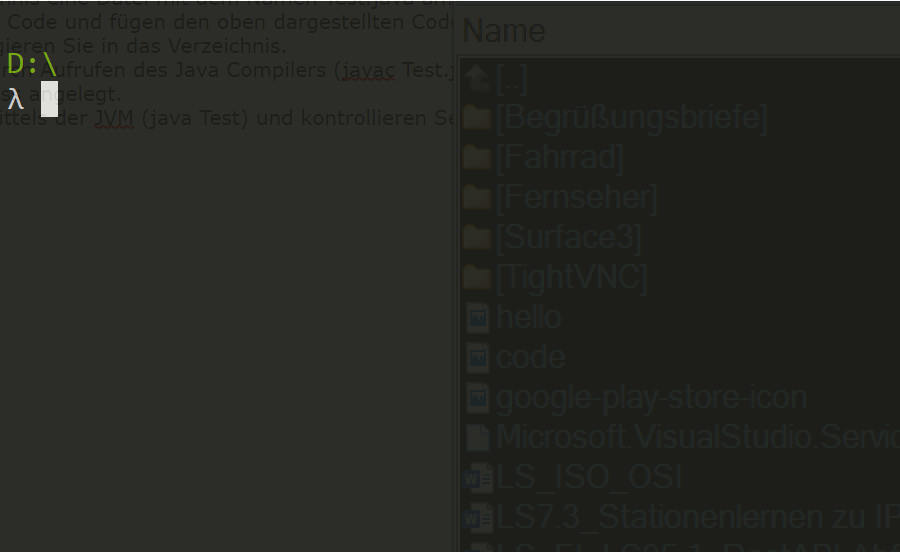
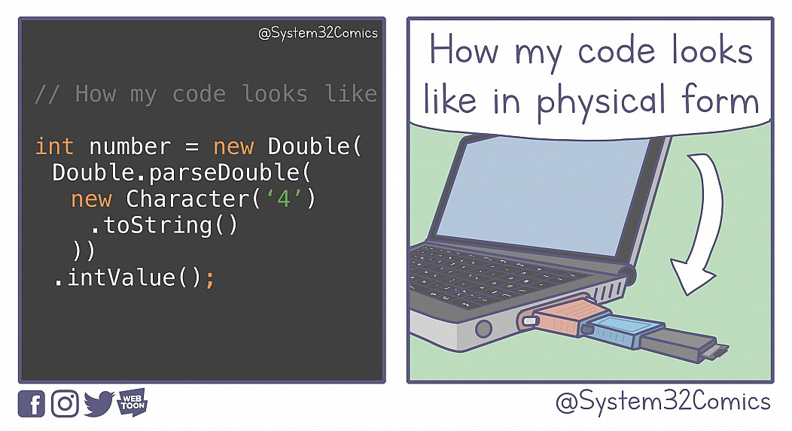

Lernsituation 2
Die Implementierung des Kassensystems soll in der Programmiersprache JAVA unter Verwendung einer Versionskontrolle erfolgen.
Als Auszubildender werden Sie damit beauftragt ihr Notebook für die Entwicklungsarbeit vorzubereiten und exemplarisch eine Methode zu entwickeln.
Die Programmiersprache JAVA
Aufgabe 1
Die Implementierung der Software soll in einer aktuellen Programmiersprache erfolgen. Sammeln Sie Namen von Programmiersprachen von denen Sie schon einmal gehört haben.
Gruppieren Sie die Sprache hinsichtlich der Ausführung der Sprache und teilen Sie die Sprachen in Compiler-Sprachen und Interpreter-Sprachen ein!
Aufgabe 2
Da in der Change IT GmbH bereits vielfältige Erfahrungen mit der Programmiersprache JAVA vorliegen, entscheidet sich die Geschäftsleitung der ChangeIT GmbH dafür auch diese Software in Java zu implementieren. Installieren Sie daher ein aktuelles Java Software Development Kit (SDK) auf ihrem Rechner.
- Starten Sie eine Konsolen-Anwendung!
- Erzeugen Sie auf ihrer Festplatte ein leeres Verzeichnis und wechseln Sie in dieses Verzeichnis
- Starten Sie einen Editor auf ihrem PC (notepad bei windows, nano bei Linux/MacOS) Tippen Sie den unten abgebildeten Source Code ab und speichern Sie den Sourcecode in der Datei Test.java.
- Übersetzen Sie den Sourcecode mittels des Java Compilers javac in Bytecode
- Führen Sie das Programm mit Hilfe der Java Virtual Machine java aus.
1. public class Test {
2.
3. public static void main(String[] args) {
4. System.out.println("Hallo Welt");
5. }
6. }
Hinweise:
- Beachten Sie dass die Datei ebenso heißt wie der Name der Klasse (hier Test).
- Beachten Sie dass Java zwischen Groß- und Kleinschreibung unterscheidet
- Das eigentlich Programm befindet sich in der Zeile 4
- Der Anweisung wird in Java mittels eines Semikolons abgeschlossen.

Arbeiten mit einer Versionskontrolle
Die Software soll gemeinsam in Entwicklerteam der ChangeIT GmbH von mehreren Entwicklern implementiert werden. Zur Koordinierung des Entwicklungsprozesses soll eine Versionskontrolle genutzt werden.
Aufgabe 3
Sammeln Sie im Klassenverband zunächst Aspekte die eine Versionsverwaltungs-Software zu erfüllen hat.
In vergangenen Projekte wurden bereits die Versionssoftware git eingesetzt. Auch das neue Projekt soll mittels dieser Versionsverwaltungs-Software umgesetzt werden. Installieren Sie sich daher zunächst git auf ihrem PC.
Aufgabe 4
Die Versionsverwaltung git ist eine Konsolen-Anwendung. Informieren Sie sich über die wichtigsten Kommandos des Programms git. Sie dazu auch Git Cheat Sheet
Führen Sie den folgenden Arbeitsprozess durch. Notieren Sie sich dabei die verwendeten git-Befehle.
- Erstellen Sie im zuvor angelegten Verzeichnis ein git Repository.
- Fügen Sie die Datei Test.java dem Repository hinzu (stagen).
- Committen Sie die Datei Test.java in das Repository.
- Erzeugen Sie einen neuen Branch mit dem Namen "dev" und wechseln Sie in diesen Branch.
- Verändern Sie den Programmcode dahingehend, dass "Hello {Bezeichnung ihrer Klasse}" ausgegeben wird.
- Fügen Sie die Änderungen dem Repository hinzu.
- Wechseln Sie in den master Branch des Repositories und fügen Sie den "dev" Branch mit dem "master" Branch zusammen.
- Lassen Sie sich alle Commit Nachrichten anzeigen.
- Clonen Sie das Repository unter https://github.com/jtuttas/LF5-schueler.git!
Arbeiten mit einer Entwicklungsumgebung
Die Entwicklungen im Team der ChangeIT GmbH erfolgen zumeist mit dem Editor VS Code. Installieren Sie sich den Editor VS Code inkl. der notwendigen Erweiterungen zum Starten und Debuggen eines JAVA Programms.
Aufgabe 5
Öffnen Sie das zuvor erstellte Verzeichnis mit dem Editor VS Code.
Ermitteln Sie, wie ihnen der Editor bei den folgenden Arbeitsprozesses hilft.
- Führen Sie das Programm Test.java mit Hilfe von VS Code aus.
- Setzen Sie einen Haltepunkt in der Zeile 5 des Programms und starten Sie das Programm im Debug Modus.
- Wechseln Sie auf den "dev" Branch und erweitern Sie das Programm um eine weitere Ausgabe.
- Committen Sie die Änderungen am Programm
- Führen Sie den "dev" Branch mit dem "master" Branch zusammen.
Ein- und Ausgaben
Eingaben im Kassensystem für die GoodFood GmbH erfolgen zum Teil über die Tastatur (Eingabe des PINs für den Kassierer). Die Ausgaben erfolgen auf dem Bildschirm des Kassensystems. Wie Ausgaben in JAVA zu realisieren sind, zeigt bereits unser anfänglich entwickeltes Beispielprogramm. So erzeugt:
System.out.println("Hallo Welt");
Die Ausgabe "Hallo Welt" auf dem Standrad Ausgabegerät (zumeist der Bildschirm). Informieren Sie sich wie Sie mittels JAVA von der Tastatur Daten einlesen können.
Übung 1
Erstellen Sie ein Programm welches den Anwender nach seinem Namen fragt und anschließend nach seiner Anrede und anschließend die Ausgabe erzeugt "Hallo {Anrede} {Name}".
Datentypen und Typumwandlung
Java zählt zu den starktypisierten und objektorientierten Programmiersprachen. Informieren Sie sich welche primitiven Datentypen in Java existieren und wie diese umgewandelt werden können. Erarbeiten Sie dazu den Unterschied zwischen impliziten Casten und expliziten Casten. Erörtern Sie im weiten Verlauf, wie sie die Wrapper Klassen dazu nutzen können, um Daten, die als Zeichenketten vorliegen in einen einen primitiven Datentyp zu wandeln.
Erörtern Sie im Klassenverband was uns der "Künstler" mit dem unten abgebildeten Bild sagen wollte?

Im Jahr 2022 sorgte ein Fehler bei MS Exchange dafür, dass keine Emails mehr zugestellt werden konnten. Lesen Sie sich den folgenden Artikel durch und diskutieren im Klassenverband, wie es zu diesem Fehler kommen konnte.
Übung 2
- Definieren Sie zwei Variablen vom Type String in Java mit dem Namen umfang und dem Wert "3.14" und dem Namen alter vom Datentype String mit dem Wert "25".
- Wandeln Sie die Variablen in den Datentyp Integer bzw. in Double um (Nutzen Sie hierzu die entsprechenden Wrapper Klassen).
- Multiplizieren Sie die Variable umfang mit 2.0 und addieren Sie zur Variablen alter 3 hinzu.
- Weisen Sie anschließen die neu berechneten Werte den Variablen umfang und alter hinzu (dazu müssen die Datentypen Integer und Double wieder in den Datentyp String gewandelt werden).
Operatoren
Einige Programmabschnitte im Kassensystem für die GoodFood GmbH erfolgen nach dem sogenannten EVA Prinzip. Dieses steht für Eingabe, Verabeitung und Ausgabe. Wie Ein- und Ausgaben zu realisieren sind haben wir bereits im vorherigen Kapitel erörtert. In diesem Kapitel geht es nun um die Verarbeitung von Daten mittels Operatoren. Informieren Sie sich über folgende Operatoren in Java:
- arithmetische Operatoren
- Vergleichsoperatoren
- logische Operatoren
Übung 3
Entwickeln Sie ein Programm, welchen den Benutzer nach einen Länge in m fragt und dann dem Benutzer anzeigt wie groß ein Quadrat in \(cm^2\) und einen Würfel in \(cm^3\) mit der gegebenen Länge wäre.
Länge in m?: 0.15
Ein Quadrat mit der Kantenlänge von 0.15m hätte eine Fläche von 225 cm^2.
Ein Würfel mit der Kantenlänge von 0.15m hätte ein Volumen von 3375 cm^3.
Lösung Übung 3
public class QuadratWuerfel {
public static void main(String[] args) {
Scanner scanner = new Scanner(System.in, "iso-8859-1");
System.out.print("Seitenlänge in m:");
float l = Float.parseFloat(scanner.nextLine());
float a = l*l*100*100;
float v = l*l*l*100*100*100;
System.out.println("Ein Quadrat hätte eine Fläche von "+a+"m^2");
System.out.println("Ein Würfel das Volumen von "+v+"m^3");
}
}
Übung 4
Entwickeln Sie ein Programm, welchen den Benutzer nach einer Anzahl von Minuten fragt und dass diese Anzahl ausgibt in der Form dd:hh:mm !
Anzahl von Minuten: 4000
4000 Minuten entsprechen 2 Tage, 18 Stunden und 40 Minuten!
Lösung Übung 4
import java.util.Scanner;
public class Minuten {
public static void main(String[] args) {
Scanner s = new Scanner(System.in);
int minuten=0;
int stunden=0;
int tage=0;
System.out.print("Abzahl der Minuten:");
minuten=s.nextInt();
tage=minuten/1440;
minuten=minuten-tage*1440;
stunden=minuten/60;
minuten=minuten-stunden*60;
System.out.println(tage+":"+stunden+":"+minuten);
}
}
Funktionen und Methoden
Oft werden Teile eines Programmes wiederverwertet und die Logik in einer Funktion bzw. Methode ausgelagert. Informieren Sie sich darüber, wie in Java Logik in Methoden ausgelagert werden kann. Erarbeiten Sie dabei den Unterschied zwischen call by value und call by reference.
Aufgabe 6
Zum Abrechnen von Bulkware (Ware deren Preis in €/kg angegeben wird) soll eine Methode calcPrice entwickelt werden. Diese enthält den Preis in €/kg und das ermittelte Gewicht in kg und liefert als Ergebnis den Preis in €.
+ calcPrice(eur_per_kg:double,kg:double):double
Erstellen Sie diese Methode calcPrice in der Klasse App.java im Verzeichnis shop/src/main/java (in dem unter Aufgabe 4 geklonten Repository). Die Methode sollte als statische Methode folgende Signatur ausweisen:
public static double calcPrice(double eur, double kg) {
// Ihre Implementierung hier
}
Aufgabe 7
Rufen Sie innerhalb der main-Methode ihre Funktion mit folgenden Werten aus und überprüfen Sie das Ergebnis.
| Preis je kg | Menge | erwartetes Ergebnis | erhaltenes Ergebnis |
|---|---|---|---|
| 2.5 | 5 | 12.5 | |
| 0.75 | 8 | 6 | |
| 1.25 | 15 | 18.75 | |
| 0.8 | 5 | 4 | |
| 0.5 | 1.25 | 0.625 |
Mit Hilfe der obigen Tabelle haben Sie die Korrektheit ihrer entwickelten Methode nachgewiesen. Diskutieren Sie im Klassenverband, wie dieses Test heißen könnte.
Aufgabe 8
Informieren Sie sich über Komponenten-Test und wie diese in Java werden diese mittels des Paketes JUNIT realisiert werden.
Erstellen Sie in der Klasse AppTest.java (in dem zuvor in Aufgabe 4 geklonten Repository https://github.com/jtuttas/LF5-schueler.git) einen geeigneten Komponenten Test für die von ihnen entwickelte Methode und führen Sie diesen aus.
Fragen zum Verständnis
Welche der folgenden Aussagen über den Java-Compiler und die Java Virtual Machine (JVM) ist korrekt?
- [ ] A) Der Java-Compiler erzeugt direkt ausführbaren Maschinencode.
- [ ] B) Die JVM ist dafür verantwortlich Java-Bytecode zu interpretieren und ihn zu kompilieren.
- [ ] C) Der Java-Compiler erzeugt Bytecode, der plattformunabhängig ist und von der JVM interpretiert wird.
- [ ] D) Bytecode ist ein für den Menschen lesbares Format.
Welche der folgenden Aussagen zu Git, einem beliebten Tool für die Versionskontrolle, ist nicht korrekt?
- [ ] A) Bei Git handelt es sich um ein zentralisiertes Versionskontrollsystem.
- [ ] B) Mit Git können Entwickler parallel in verschiedenen Branches arbeiten.
- [ ] C) Git ermöglicht das Zusammenführen von Änderungen durch den Merge-Vorgang.
- [ ] D) Git bietet die Möglichkeit, frühere Versionen eines Projekts zu betrachten.
Wofür steht das Akronym EVA im Kontext von Computersystemen?
- [ ] Entwickeln, Verifizieren, Aktualisieren
- [ ] Eingabe, Verarbeitung, Ausgabe
- [ ] Evaluieren, Verteilen, Anwenden
- [ ] Extrahieren, Visualisieren, Archivieren
Gegeben sei der folgende Java-Code:
double x = 10.5;
int y = (short) x;
- [ ] 10,5
- [ ] 10
- [ ] 11
- [ ] Es wird einen Kompilierfehler geben.
Welches Ergebnis liefert der folgende Java-Code?
int x = 10;
int y = 3;
int z = x % y;
Was ist der Wert von z nach Ausführung des Codes?
- [ ] 3
- [ ] 2
- [ ] 1
- [ ] 0
Betrachten Sie den folgenden Java-Code:
public class Test {
public static void main(String[] args) {
StringBuilder str = new StringBuilder("Hello");
modifyString(str);
System.out.println(str);
}
public static void modifyString(StringBuilder s) {
s.append(" World");
}
}
Was wird der obige Code ausgeben?
- [ ] "Hello"
- [ ] "Hello World"
- [ ] "World"
- [ ] Ein Fehler wird ausgegeben
Betrachten Sie den folgenden Java-Code:
public class TestValue {
public static void main(String[] args) {
int number = 5;
modifyValue(number);
System.out.println(number);
}
public static void modifyValue(int num) {
num = num * 2;
}
}
Was gibt der obige Code aus?
- [ ] 5
- [ ] 10
- [ ] 0
- [ ] Es wird ein Fehler ausgegeben